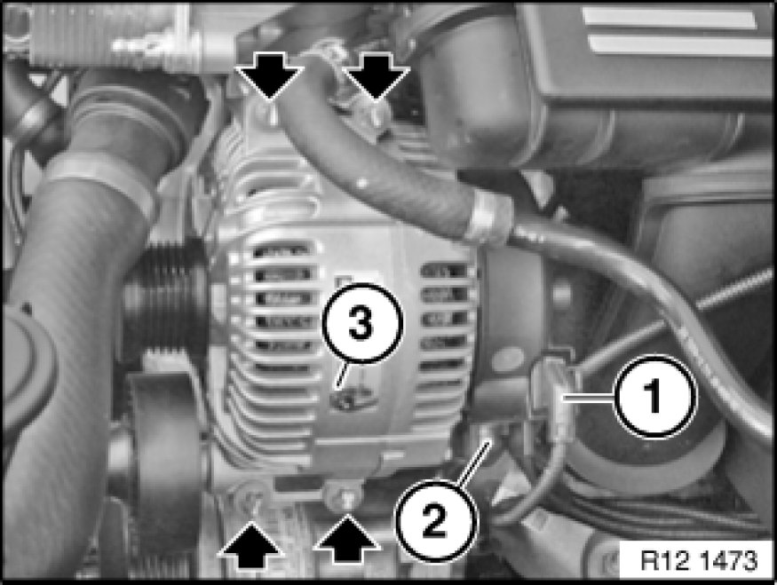

Alternator: Service and Repair
12 31 020 - Removing and installing or replacing alternator (N52, N52K, N51, N53)

Important!
Aluminium-magnesium materials.
No steel screws/bolts may be used due to the threat of electrochemical corrosion.
A magnesium crankcase requires aluminium screws/bolts exclusively.
Aluminium screws/bolts must be replaced each time they are released.
Aluminium screws/bolts are permitted with and without color coding (blue).
For reliable identification:
Aluminium screws/bolts are not magnetic.
Jointing torque and angle of rotation must be observed without fail (risk of damage).

Necessary preliminary tasks:
- Switch off ignition
- Disconnect battery negative lead Disconnecting and Connecting Battery Negative Lead
- Remove intake filter housing
- Remove alternator drive belt

Unlock plug (1) and remove.
Slacken nut (2).
Installation Note:
Tightening torque 12 31 1AZ [1][2]Specifications.
Release screws and remove alternator (3).
Installation Note:
Replace aluminium screws.
Tightening torque 12 31 2AZ [1][2]Specifications.